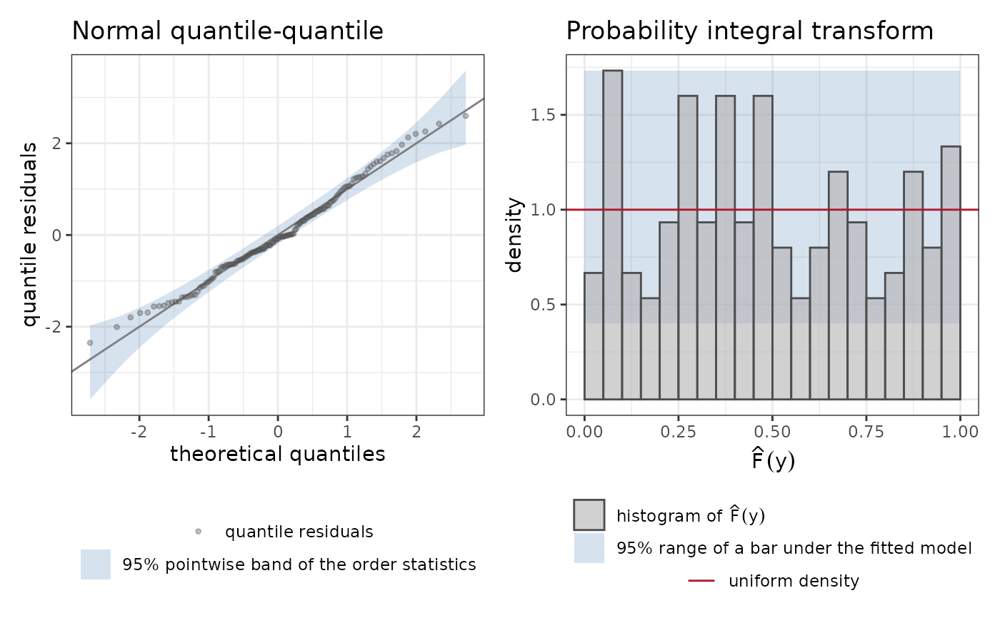

Draws a set of diagnostic_plot graphs of a fit and returns them as a
named list of ggplot2 objects, or composed in one figure. The default set
is the observed density of the response with the densities of simulated
responses (plot_ppc()), the worm plot (plot_worm()), the calibration of
the predicted quantiles (plot_calibration()) and the quantile residuals
against the predicted median (plot_residuals() with
against = "median"). None of the four reads a particular parameter, so
the set applies to every family, including those without a location
parameter.
Arguments
- fit
A
StatmodFit().- plot_types
A list of objects inheriting from diagnostic_plot, or
NULLfor the default set.- data
The data frame of the fit, or
NULL; it is required by the graphs that read a covariate.- compose
Whether to compose the graphs in one figure with patchwork.
Examples
set.seed(1)
dd <- data.frame(x = runif(150))
dd$y <- 1 + dd$x + rnorm(150, sd = 0.4)
fit <- statmod(y ~ x, distributions7::gaussian1_distrib(), dd)
d <- diagnostics(fit)
names(d)
#> [1] "ppc" "worm" "calibration" "residuals"
diagnostics(fit, plot_types = list(plot_qq(), plot_pit()), compose = TRUE)
